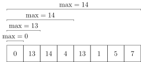
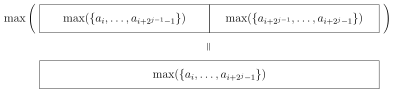
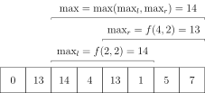

OI Wiki · prijevod · Strukture podatakaOI Wiki · translation · Data structures
ST tablicaSparse table
Sadržaj
Definicija

ST tablica (Sparse Table, rijetka tablica) struktura je podataka za rješavanje problema s ponovljivim doprinosom.
Što je problem s ponovljivim doprinosom?
Problem s ponovljivim doprinosom (idempotentna operacija) jest intervalni upit za operaciju \(\operatorname{opt}\) koja zadovoljava \(x\operatorname{opt} x=x\). Primjerice, za maksimum vrijedi \(\max(x,x)=x\), a za gcd vrijedi \(\operatorname{gcd}(x,x)=x\), pa su RMQ i intervalni GCD problemi s ponovljivim doprinosom. Zbroj na intervalu nema to svojstvo: ako se pri računanju zbroja intervala predobrađeni intervali preklapaju, preklopljeni se dio zbroji dvaput, što ne želimo. Osim toga, \(\operatorname{opt}\) mora biti i asocijativna da bi se mogla rješavati ST tablicom.
Što je RMQ?
RMQ je kratica za engleski Range Maximum/Minimum Query i označava maksimum (minimum) na intervalu. Postoji mnogo načina rješavanja problema RMQ; vidi poglavlje o RMQ-u.
Uvod
Luogu P3865【模板】ST 表 & RMQ 问题
Zadano je \(n\) (\(1\le n\le 10^5\)) cijelih brojeva i \(m\) (\(1\le m\le 2\times 10^6\)) upita; za svaki upit treba odgovoriti koliki je maksimum na intervalu \([l,r]\).
Razmotrimo grubo rješenje. Za svaki upit prođemo interval \([l,r]\) i nađemo maksimum.
Očito će taj algoritam premašiti vremensko ograničenje.
ST tablica
ST tablica temelji se na ideji binary liftinga; omogućuje predobradu u \(\Theta(n\log n)\) i odgovor na svaki upit u \(\Theta(1)\). Ne podržava izmjene.
Na temelju ideje binary liftinga razmislimo kako izračunati maksimum na intervalu. Vidimo da, ako slijedimo uobičajeni postupak binary liftinga i svaki put skačemo \(2^i\) koraka, složenost upita ostaje \(\Theta(\log n)\), što nije bolje od segment treea, a korak predobrade čak je sporiji od segment treea.
Primjećujemo da je \(\max(x,x)=x\), tj. maksimum na intervalu problem je sa svojstvom „ponovljivog doprinosa”. Čak i ako se predobrađeni intervali kojima računamo preklapaju, odgovor je ispravan dok god je njihova unija upravo traženi interval.
Ako to ručno simuliramo, vidimo da upitni interval možemo pokriti s najviše dva predobrađena intervala, tj. vremenska složenost upita može se spustiti na \(\Theta(1)\), što je vrlo učinkovito u zadacima s velikim brojem upita.
Konkretna implementacija:
Neka \(f(i,j)\) označava maksimum na intervalu \([i,i+2^j-1]\).
Očito je \(f(i,0)=a_i\).
Prema definiciji, druga dimenzija odgovara „skoku od \(2^j-1\) koraka” u binary liftingu; slijedeći tu ideju, zapisujemo prijelaz stanja: \(f(i,j)=\max(f(i,j-1),f(i+2^{j-1},j-1))\).

To je bio dio s predobradom. Upit se može jednostavno izvesti ovako:
Za svaki upit \([l,r]\) podijelimo ga na dva dijela: \([l,l+2^s-1]\) i \([r-2^s+1,r]\), gdje je \(s=\left\lfloor\log_2(r-l+1)\right\rfloor\). Maksimum rezultata tih dvaju dijelova je odgovor.

Prema gornjem razmatranju o „problemima s ponovljivim doprinosom”, budući da je maksimum „problem s ponovljivim doprinosom”, preklapanje ne utječe na maksimum intervala. A kako ta dva intervala potpuno pokrivaju \([l,r]\), odgovor je zajamčeno ispravan.
Luogu P3865【模板】ST 表 & RMQ 问题 – referentna implementacija
#include <algorithm>
#include <iostream>
using namespace std;
constexpr int N = 100000 + 5;
constexpr int logN = 16; // ⌊ log_2 N ⌋
int f[logN + 1][N], Logn[N];
// inicijalizacija vrijednosti logaritama
void pre() {
Logn[2] = 1;
for (int i = 3; i < N; i++) {
Logn[i] = Logn[i / 2] + 1;
}
}
int main() {
cin.tie(nullptr)->sync_with_stdio(false);
pre();
int n, m;
cin >> n >> m;
for (int i = 1; i <= n; i++) cin >> f[0][i];
for (int j = 1; j <= logN; j++)
for (int i = 1; i + (1 << j) - 1 <= n; i++)
f[j][i] = max(f[j - 1][i], f[j - 1][i + (1 << (j - 1))]); // konkretna implementacija ST tablice
for (int i = 1; i <= m; i++) {
int x, y;
cin >> x >> y;
int s = Logn[y - x + 1];
cout << max(f[s][x], f[s][y - (1 << s) + 1]) << '\n';
}
return 0;
}
#include <algorithm>
#include <functional>
#include <iostream>
#include <vector>
#if defined(_MSC_VER) && !defined(__clang__)
#include <immintrin.h>
#define __builtin_clz _lzcnt_u32
#endif
using namespace std;
// izračun ⌊ log_2 x ⌋ ugrađenom funkcijom
int lg2(int x) { return 31 - __builtin_clz(x); }
template <typename T>
class SparseTable {
using VT = vector<T>;
using VVT = vector<VT>;
using func_type = function<T(const T &, const T &)>;
VVT ST;
static T default_func(const T &t1, const T &t2) { return max(t1, t2); }
func_type op;
public:
SparseTable(const vector<T> &v, func_type _func = default_func) {
op = _func;
int n = v.size(), l = lg2(n);
ST.assign(l + 1, VT(n, 0));
for (int i = 0; i < n; ++i) {
ST[0][i] = v[i];
}
for (int j = 1; j <= l; ++j) {
for (int i = 0; i + (1 << j) <= n; ++i) {
ST[j][i] = op(ST[j - 1][i], ST[j - 1][i + (1 << (j - 1))]);
}
}
}
T query(int l, int r) {
int q = lg2(r - l + 1);
return op(ST[q][l], ST[q][r - (1 << q) + 1]);
}
};
int main() {
cin.tie(nullptr)->sync_with_stdio(false);
int n, m;
cin >> n >> m;
vector<int> a(n);
for (int &i : a) cin >> i;
SparseTable<int> st(a);
for (int i = 1; i <= m; ++i) {
int x, y;
cin >> x >> y;
cout << st.query(x - 1, y - 1) << '\n';
}
return 0;
}
import sys
input = sys.stdin.readline
class SparseTable:
def __init__(self, arr: list, func=min):
self.func = func
self.n = len(arr)
self.log = [0] * (self.n + 1)
for i in range(2, self.n + 1):
self.log[i] = self.log[i // 2] + 1
self.k = self.log[self.n]
self.st = [[0] * (self.n) for _ in range(self.k + 1)]
self.st[0] = arr
for j in range(1, self.k + 1):
i = 0
while i + (1 << j) <= self.n:
self.st[j][i] = self.func(
self.st[j - 1][i], self.st[j - 1][i + (1 << (j - 1))]
)
i += 1
def query(self, left: int, right: int):
j = self.log[right - left + 1]
return self.func(self.st[j][left], self.st[j][right - (1 << j) + 1])
n, m = map(int, input().split())
a = list(map(int, input().split()))
st = SparseTable(a, max)
for _ in range(m):
left, right = map(int, input().split())
print(st.query(left - 1, right - 1))
Napomene
-
Ulaznih i izlaznih podataka obično je mnogo, pa se preporučuje uključiti optimizaciju ulaza i izlaza.
-
Pri predobradi ST tablice obično treba napraviti niz čija je jedna dimenzija veličine \(\log n\), a druga veličine \(n\); tada dimenziju veličine \(\log n\) treba staviti kao prvu, radi bolje lokalnosti priručne memorije (cache).
-
Ne isplati se svaki put iznova računati logaritam pomoću std::log; preporučuje se računati ga ugrađenim funkcijama poput
__builtin_clzili__lg. Ako te ugrađene funkcije nisu dostupne, vrijednosti logaritma mogu se i predobraditi. Predobrada izgleda ovako:
ST tablica za druge informacije
Osim RMQ-a postoje i drugi „problemi s ponovljivim doprinosom”. Primjerice „bitovni AND na intervalu”, „bitovni OR na intervalu” i „GCD na intervalu” – sve to ST tablica rješava učinkovito.
Treba napomenuti da za „GCD na intervalu” složenost upita ST tablicom nije bolja od segment treea (uz raspon vrijednosti \(w\), složenost upita ST tablicom je \(\Theta(\log w)\), a segment treeom \(\Theta(\log n+\log w)\), pri čemu je raspon vrijednosti obično veći od \(n\)), ali ni složenost predobrade ST tablice nije lošija od segment treea, a programerski je ST tablica mnogo jednostavnija od segment treea.
Ako analiziramo, „problemi s ponovljivim doprinosom” obično u sebi nose nekakvu komponentu nalik RMQ-u. Primjerice, „bitovni AND na intervalu” jest minimum po svakom bitu, a „GCD na intervalu” jest minimum eksponenta svakog prostog faktora.
Sažetak
ST tablica dobro održava intervalne informacije s „ponovljivim doprinosom” (koje ujedno moraju biti asocijativne), ima nisku vremensku složenost i vrlo malo koda u usporedbi s drugim algoritmima. Međutim, informacije koje ST tablica može održavati vrlo su ograničene, teško se proširuje i ne podržava izmjene.
Zadaci za vježbu
Dodatak: analiza vremenske složenosti ST tablice za GCD na intervalu
Tijekom izvođenja algoritma može proći \(\Theta(\log n)\) iteracija. Svaka iteracija može rekurzivno pozivati funkciju GCD; uz raspon vrijednosti \(w\), vremenska složenost funkcije GCD najviše je \(\Omega(\log w)\), pa se čini da je ukupna složenost \(O(n\log n\log w)\).
Međutim, u postupku GCD-a svaka rekurzija (osim posljednje) barem prepolovi neki broj u nizu, a brojevi u nizu mogu se prepoloviti najviše \(\log_2 (w^n)=\Theta(n\log w)\) puta, pa se rekurzivni dio GCD-a izvodi najviše \(O(n\log w)\) puta. Kad se tome doda \(\Theta(n\log n)\) za petlje (i posljednju razinu rekurzije), konačna je složenost \(O(n(\log w+\log n))\); budući da se mogu konstruirati podaci na kojima je složenost \(\Omega(n(\log w+\log n))\), konačna je složenost \(\Theta(n(\log w+\log n))\).
Složenost upita lako se analizira: u najgorem slučaju, kad svaki upit pita za najgori par brojeva, složenost je \(\Theta(\log w)\). Stoga je složenost ST tablice za „GCD na intervalu” \(\Theta(n(\log n+\log w))\) za predobradu i \(\Theta(\log w)\) po upitu.
Odgovarajuće operacije segment treea imaju predobradu \(\Theta(n\log w)\) i upit \(\Theta(\log n+\log w)\).
Ovo nije strog matematički dokaz; stroži dokaz slijedi:
Stroži dokaz
Za razumijevanje ovog odjeljka možda je potrebno znanje o „metodi potencijala” iz poglavlja Vremenska složenost.
Najprije analizirajmo složenost predobrade:
Neka je „promatrani niz” niz trenutne razine petlje pri predobradi ST tablice. Primjerice, niz nulte razine je izvorni niz, a niz prve razine je niz nulte razine nakon jedne iteracije, tj. st[1..n][1]; označimo ga s \(A\).
Funkciju potencijala definiramo kao logaritam po bazi dva umnoška svih brojeva u „promatranom nizu”, tj. \(\Phi(A)=\log_2\left(\prod\limits_{i=1}^n A_i\right)\).
U jednoj iteraciji utrošeno vrijeme jednako je zbroju vremena petlje i vremena GCD-a. Pritom vrijeme GCD-a varira: najkraće može biti samo dvije ili čak jedna rekurzija, a najdulje \(O(\log w)\) rekurzija. No u postupku GCD-a, osim prve i posljednje razine, svaka rekurzija barem prepolovi neki rezultat u „promatranom nizu”. Dakle, \(\Phi(A)\) se smanji barem za \(1\), pa se vrijeme te razine rekurzije može amortizirati funkcijom potencijala.
Istodobno vidimo da je početna vrijednost \(\Phi(A)\) najviše \(\log_2 (w^n)=\Theta(n\log w)\), a \(\Phi(A)\) ne raste. Stoga je složenost predobrade ST tablice \(O(n(\log w+\log n))\).
Contents
Definition
The ST table (Sparse Table) is a data structure for solving repeatable contribution problems.
What is a repeatable contribution problem?
A repeatable contribution problem (idempotent operation) is a range query for an operation \(\operatorname{opt}\) satisfying \(x\operatorname{opt} x=x\). For example, the maximum satisfies \(\max(x,x)=x\) and gcd satisfies \(\operatorname{gcd}(x,x)=x\), so RMQ and range GCD are repeatable contribution problems. Range sum does not have this property: if the precomputed ranges used to compute a range sum overlap, the overlapping part is counted twice, which we do not want. In addition, \(\operatorname{opt}\) must also be associative for the sparse table to be applicable.
What is RMQ?
RMQ stands for Range Maximum/Minimum Query, i.e. the maximum (minimum) over a range. There are many ways to solve the RMQ problem; see the RMQ topic.
Introduction
Luogu P3865【模板】ST 表 & RMQ 问题
Given \(n\) (\(1\le n\le 10^5\)) integers and \(m\) (\(1\le m\le 2\times 10^6\)) queries, for each query you need to answer the maximum over the range \([l,r]\).
Consider the brute-force approach. For every query, scan the range \([l,r]\) once and find the maximum.
Clearly this algorithm exceeds the time limit.
Sparse table
The sparse table is based on the idea of binary lifting; it achieves \(\Theta(n\log n)\) preprocessing and answers each query in \(\Theta(1)\). It does not support updates.
Based on the idea of binary lifting, let us think about how to find the range maximum. We can see that if we follow the usual binary lifting procedure and jump \(2^i\) steps each time, the query complexity is still \(\Theta(\log n)\), which is no better than a segment tree, and the preprocessing step is even slower than a segment tree.
We notice that \(\max(x,x)=x\), i.e. range maximum is a problem with the "repeatable contribution" property. Even if the precomputed ranges used to compute it overlap, the final answer is correct as long as the union of these ranges is the queried range.
If we simulate by hand, we find that we can cover the query range with at most two precomputed ranges, i.e. the query time complexity can be reduced to \(\Theta(1)\), which is very effective for problems with a huge number of queries.
The concrete implementation is as follows:
Let \(f(i,j)\) denote the maximum over the range \([i,i+2^j-1]\).
Clearly \(f(i,0)=a_i\).
By the definition, the second dimension corresponds to "jumping \(2^j-1\) steps" in binary lifting; following the binary lifting idea, we write the state transition: \(f(i,j)=\max(f(i,j-1),f(i+2^{j-1},j-1))\).
That is the preprocessing part. Queries can be implemented simply as follows:
For every query \([l,r]\), split it into two parts: \([l,l+2^s-1]\) and \([r-2^s+1,r]\), where \(s=\left\lfloor\log_2(r-l+1)\right\rfloor\). The maximum of the results of the two parts is the answer.
By the argument about "repeatable contribution problems" above, since the maximum is a "repeatable contribution problem", the overlap does not affect the range maximum. And since these two ranges completely cover \([l,r]\), the correctness of the answer is guaranteed.
Luogu P3865【模板】ST 表 & RMQ 问题 reference implementation
#include <algorithm>
#include <iostream>
using namespace std;
constexpr int N = 100000 + 5;
constexpr int logN = 16; // ⌊ log_2 N ⌋
int f[logN + 1][N], Logn[N];
// initialize the logarithm values
void pre() {
Logn[2] = 1;
for (int i = 3; i < N; i++) {
Logn[i] = Logn[i / 2] + 1;
}
}
int main() {
cin.tie(nullptr)->sync_with_stdio(false);
pre();
int n, m;
cin >> n >> m;
for (int i = 1; i <= n; i++) cin >> f[0][i];
for (int j = 1; j <= logN; j++)
for (int i = 1; i + (1 << j) - 1 <= n; i++)
f[j][i] = max(f[j - 1][i], f[j - 1][i + (1 << (j - 1))]); // the actual sparse table implementation
for (int i = 1; i <= m; i++) {
int x, y;
cin >> x >> y;
int s = Logn[y - x + 1];
cout << max(f[s][x], f[s][y - (1 << s) + 1]) << '\n';
}
return 0;
}
#include <algorithm>
#include <functional>
#include <iostream>
#include <vector>
#if defined(_MSC_VER) && !defined(__clang__)
#include <immintrin.h>
#define __builtin_clz _lzcnt_u32
#endif
using namespace std;
// compute ⌊ log_2 x ⌋ with a builtin function
int lg2(int x) { return 31 - __builtin_clz(x); }
template <typename T>
class SparseTable {
using VT = vector<T>;
using VVT = vector<VT>;
using func_type = function<T(const T &, const T &)>;
VVT ST;
static T default_func(const T &t1, const T &t2) { return max(t1, t2); }
func_type op;
public:
SparseTable(const vector<T> &v, func_type _func = default_func) {
op = _func;
int n = v.size(), l = lg2(n);
ST.assign(l + 1, VT(n, 0));
for (int i = 0; i < n; ++i) {
ST[0][i] = v[i];
}
for (int j = 1; j <= l; ++j) {
for (int i = 0; i + (1 << j) <= n; ++i) {
ST[j][i] = op(ST[j - 1][i], ST[j - 1][i + (1 << (j - 1))]);
}
}
}
T query(int l, int r) {
int q = lg2(r - l + 1);
return op(ST[q][l], ST[q][r - (1 << q) + 1]);
}
};
int main() {
cin.tie(nullptr)->sync_with_stdio(false);
int n, m;
cin >> n >> m;
vector<int> a(n);
for (int &i : a) cin >> i;
SparseTable<int> st(a);
for (int i = 1; i <= m; ++i) {
int x, y;
cin >> x >> y;
cout << st.query(x - 1, y - 1) << '\n';
}
return 0;
}
import sys
input = sys.stdin.readline
class SparseTable:
def __init__(self, arr: list, func=min):
self.func = func
self.n = len(arr)
self.log = [0] * (self.n + 1)
for i in range(2, self.n + 1):
self.log[i] = self.log[i // 2] + 1
self.k = self.log[self.n]
self.st = [[0] * (self.n) for _ in range(self.k + 1)]
self.st[0] = arr
for j in range(1, self.k + 1):
i = 0
while i + (1 << j) <= self.n:
self.st[j][i] = self.func(
self.st[j - 1][i], self.st[j - 1][i + (1 << (j - 1))]
)
i += 1
def query(self, left: int, right: int):
j = self.log[right - left + 1]
return self.func(self.st[j][left], self.st[j][right - (1 << j) + 1])
n, m = map(int, input().split())
a = list(map(int, input().split()))
st = SparseTable(a, max)
for _ in range(m):
left, right = map(int, input().split())
print(st.query(left - 1, right - 1))
Notes
-
There is usually a lot of input and output, so enabling I/O optimization is recommended.
-
When preprocessing a sparse table, one usually needs an array with one dimension of size \(\log n\) and the other of size \(n\); the dimension of size \(\log n\) should be the first one, to improve cache locality.
-
Recomputing the logarithm with std::log every time is not worth it; it is recommended to compute it with builtin functions such as
__builtin_clzor__lg. If these builtins are unavailable, the logarithm values can also be precomputed. The precomputation is as follows:
Maintaining other information with a sparse table
Besides RMQ there are other "repeatable contribution problems". For example "range bitwise AND", "range bitwise OR" and "range GCD" can all be solved efficiently by a sparse table.
Note that for "range GCD" the query complexity of a sparse table is not better than that of a segment tree (letting the value range be \(w\), the query complexity of a sparse table is \(\Theta(\log w)\), while that of a segment tree is \(\Theta(\log n+\log w)\), and the value range is usually larger than \(n\)), but the preprocessing complexity of a sparse table is not worse than that of a segment tree either, and in terms of coding complexity a sparse table is much simpler than a segment tree.
If we analyze it, "repeatable contribution problems" generally carry some RMQ-like component. For example, "range bitwise AND" takes the minimum of every bit, and "range GCD" takes the minimum of the exponent of every prime factor.
Summary
A sparse table maintains "repeatable contribution" range information (which must also be associative) well, with low time complexity and very little code compared with other algorithms. However, the information a sparse table can maintain is very limited, it does not extend well, and it does not support updates.
Exercises
Appendix: time complexity analysis of range GCD with a sparse table
While the algorithm runs, there may be \(\Theta(\log n)\) iterations. Each iteration may call the GCD function recursively; letting the value range be \(w\), the time complexity of the GCD function is at most \(\Omega(\log w)\), so the total time complexity appears to be \(O(n\log n\log w)\).
However, during GCD, every recursive call (except the last one) at least halves some number in the sequence, and the numbers in the sequence can be halved at most \(\log_2 (w^n)=\Theta(n\log w)\) times, so the recursive part of GCD runs at most \(O(n\log w)\) times. Adding the \(\Theta(n\log n)\) of the loops (and of the last level of recursion), the final time complexity is \(O(n(\log w+\log n))\); since data can be constructed so that the time complexity is \(\Omega(n(\log w+\log n))\), the final time complexity is \(\Theta(n(\log w+\log n))\).
The time complexity of the query part is easy to analyze: consider the worst case, where every query asks about the worst pair of numbers; the time complexity is \(\Theta(\log w)\). Therefore the time complexity of maintaining "range GCD" with a sparse table is \(\Theta(n(\log n+\log w))\) preprocessing and \(\Theta(\log w)\) per query.
The corresponding operations of a segment tree are \(\Theta(n\log w)\) preprocessing and \(\Theta(\log n+\log w)\) per query.
This is not a rigorous mathematical argument; a more rigorous one follows:
A more rigorous proof
Understanding this part may require knowledge of the "potential method" from Time complexity.
First we analyze the time complexity of the preprocessing part:
Let the "sequence under consideration" be the sequence of the current level of the loop when preprocessing the sparse table. For example, the sequence of level zero is the original sequence, and the sequence of level one is the sequence of level zero after one iteration, i.e. st[1..n][1]; denote it by \(A\).
The potential function is defined as the base-two logarithm of the product of all numbers in the "sequence under consideration", i.e. \(\Phi(A)=\log_2\left(\prod\limits_{i=1}^n A_i\right)\).
In one iteration, the time spent equals the time spent by the loop plus the time spent by GCD. The time spent by GCD varies: at the shortest it may be only two or even one recursive call, and at the longest it may be \(O(\log w)\) recursive calls. However, during GCD, except for the very first and the very last level, every recursive call at least halves some result in the "sequence under consideration". That is, \(\Phi(A)\) decreases by at least \(1\), so the time spent on that level of recursion can be amortized by the potential function.
At the same time, we can see that the initial value of \(\Phi(A)\) is at most \(\log_2 (w^n)=\Theta(n\log w)\), and \(\Phi(A)\) never increases. Therefore the time complexity of the preprocessing part of the sparse table is \(O(n(\log w+\log n))\).